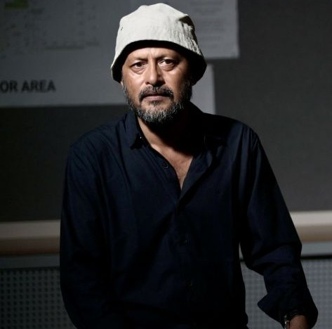

Prof. Prasantanu Mohapatra
Professor of Practice

Professor of Practice
Prasantanu Mohapatra is a Professor of Practice at the Dadasaheb Phalke International Film School, MIT-WPU. He is the renowned Director of Photography for ‘Kerala Story’ and has been a part of the Indian film industry for over 35 years. Mohapatra grew up toying with photography in a family-owned photo studio. Later he indulged in art and literature that drew him towards cinema that culminated in a degree from FTII (1992) with specialization in Cinematography. In between professional cinematography, he pursued teaching cinema as guest faculty across India, including at FTII.
Profiles